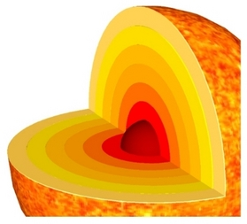
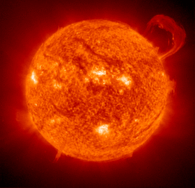

The Sun is the Earth’s dominant source light (and thus heat) and the star about which all of the planets of the solar system orbit. The Sun has mass 1.989 × 1030 kg and a radius of ~700,000 km. It lies, on average, one astronomical unit (AU) from the Earth and is about half way through its main sequence lifetime of 10 Billion years. The vast majority of the mass of the solar system is contained within the Sun, which is the dominant force in determining the motion of the planets in the solar system.
The Sun lies about 8.5 kpc (~27,700 light years) from the centre of the Milky Way, and is travelling at a speed of about 220 km/s around the galactic centre.
Artistic rendering of the Sun showing surface granulation, hot spots, flares and coronal glow. Built with Babylon.js; textures by Patrick Ryan / Microsoft. Open fullscreen.
Solar Structure
The Sun is classified as a type G2 star. From its chemical composition, we know that the Sun is the product of more than one generation of stellar evolution as the Universe was initially comprised of mainly hydrogen and helium.
The Sun is composed of several layers of different temperature and density, the hottest and densest region being at the centre.

The solar interior comprises:
- The core, about 25% of the Sun’s radius with a temperature of ~ 10,000,000 K,
- The radiative zone, out to about 70% of the Sun’s radius, with a temperature of ~ 8,000,000 K,
- The convection zone, with a temperature of about 500,000 K.
The solar atmosphere comprises:
- The photosphere, about 500 km thick, with a temperature of ~ 6,000 K,
- The chromosphere, about 10, 000 km thick, with a temperature of ~ 4,000-400,000 K,
- The corona which is the outermost layer, is very large and unstable in shape, with a temperature of ~ 1,000,000 K.
Solar features
Being the closest, the Sun is also the most well-studied star. It has a well-known sunspot cycle which has a maximum around every 11 years. Spectacular features such as coronal loops, and solar flares have been observed from solar observatories such as the Solar and Heliospheric Observatory (SOHO) and the TRACE satellite.

Coronal loops.
Credit: Transition Region and Coronal Explorer (TRACE) |

A spectacular solar flare.
Credit: SOHO (ESA & NASA) |
Vital Statistics of the Sun
| Mean distance from Earth (1 AU) | ~ 1.495×1011 m |
| Angular size from Earth | 32 arc minutes (~0.5 degrees) |
| Radius | ~ 700,000 km |
| Mass | 1.989 × 1030 kg |
| Surface temperature | ~ 5800K |
| Central Temperature | 1.5 × 107 K |
| Period of rotation | 25 Earth days at Equator |
| Age | 4.5-5 billion years |
| Surface Composition | 72% hydrogen, 26% helium, 2% “heavy” elements |
| Luminosity | 3.86 × 1026 W |
| Flux at top of Earth’s atmosphere | 1370 watts/m2 |